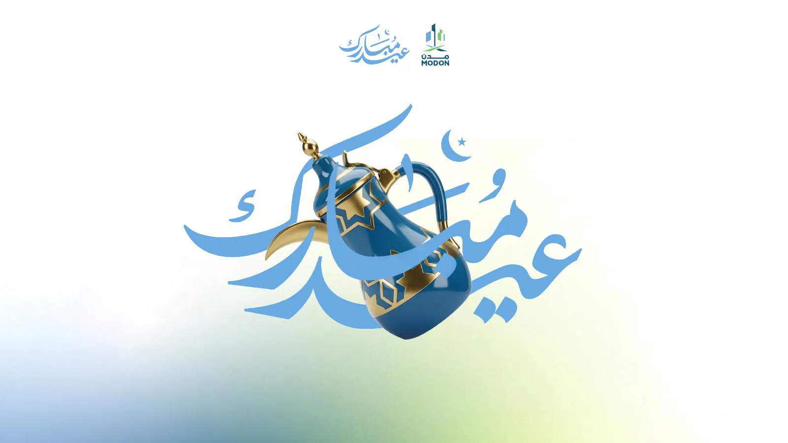
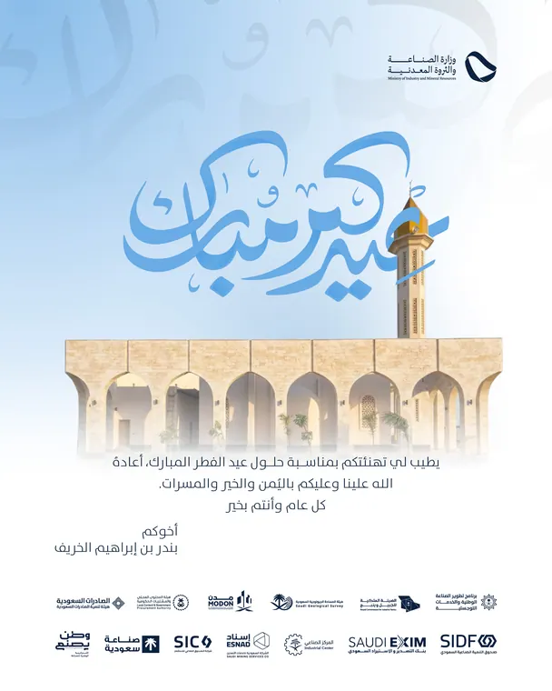
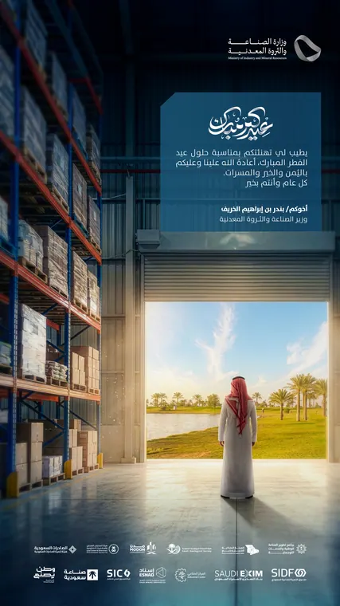
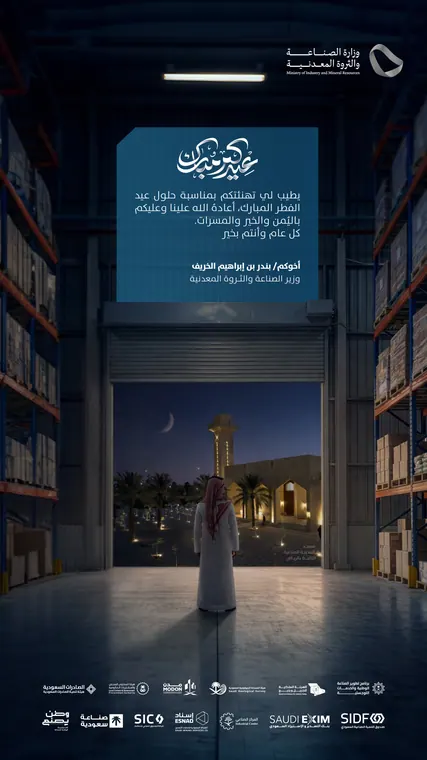
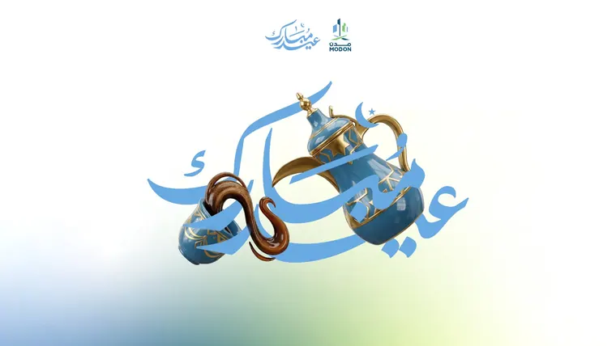
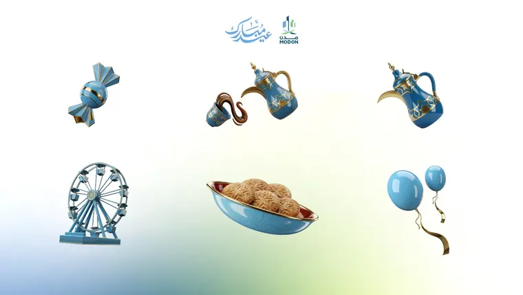

Eid al-Fitr 1447
Soft blue, glossy gold.
A seasonal theme for MODON: a hand-lettered Eid wordmark, glossy 3D festive objects and a soft blue-to-green wash, applied to the minister’s greeting in three treatments.
- Client
- MODON, Ministry of Industry
- Role
- Theme and design
- Scope
- Greeting posters, identity

Hospitality, made festive.
- The objective
- A joyful Eid theme that feels new yet belongs to the same family as Ramadan.
- The idea
- The Saudi coffee pot, a symbol of welcome, inside a hand-lettered ‘Eid Mubarak’ wordmark.
- Visual direction
- Glossy 3D festive objects on a soft blue-to-white wash: modern, playful and warm.




